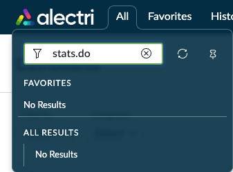
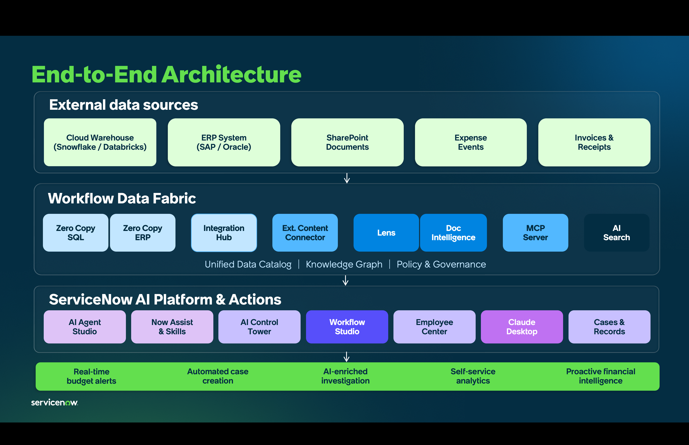
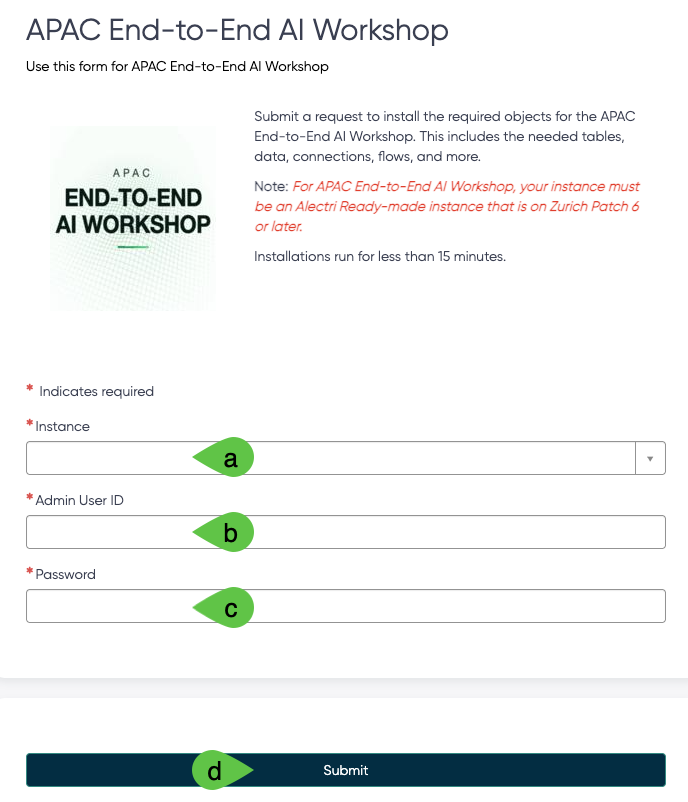

This contains critical steps to prepare your Demo Hub Instance.
Ensure you are at least in Zurich Patch 6. Go to All > type stats.do and hit Return/Enter ↵. Ensure that it is empty.

You should get a build tag with Zurich and the needed patch name.

If you have not done so yet, log in to Demo Hub then go to the APAC End-to-End AI Workshop catalog item to install the lab dependencies in your instance.
Provide your a) Zurich Patch 6 or newer Instance name, b)Admin User ID, and c)Password, then d) click Submit.

Wait for 10 to 15 minutes.
Once completed, you will get an email indicating that the import of update sets is successful.